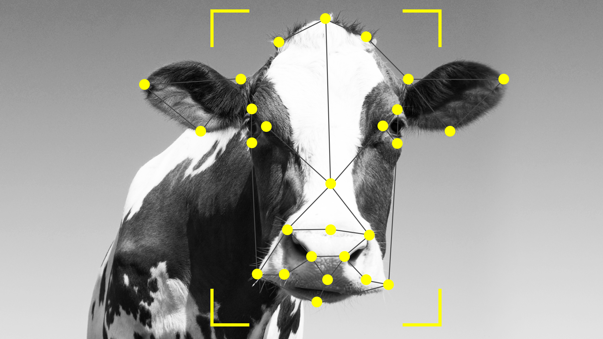
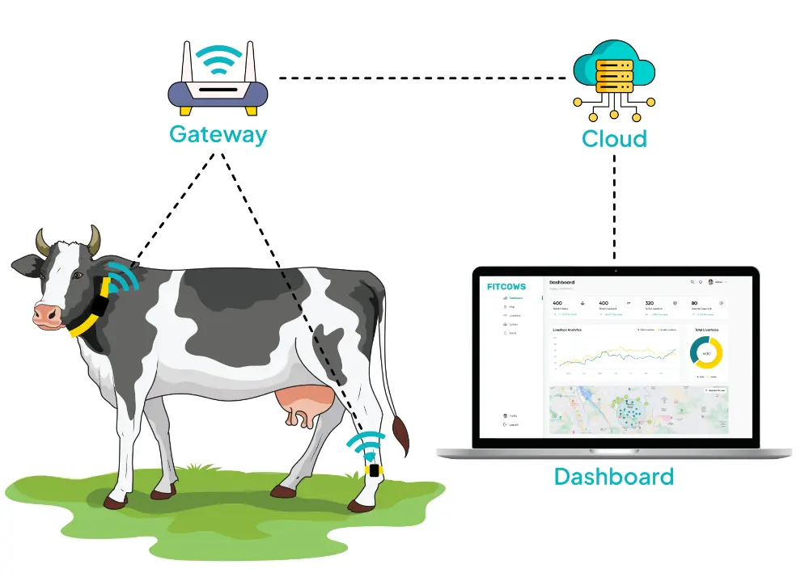

Facial Recognition
AI identifies and tracks individual animals using face detection, even in large herds.

Health Monitoring
Sensors and computer vision detect signs of illness, injury, or stress in real time.

Feeding Optimization
AI regulates feeding schedules and nutrition plans based on each animal's growth data.